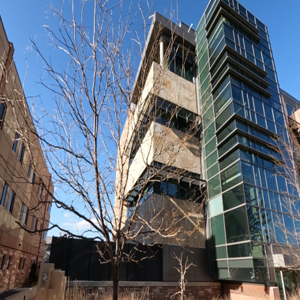
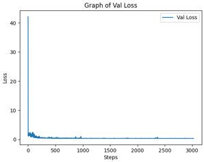
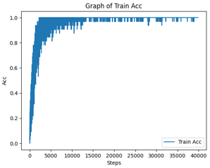
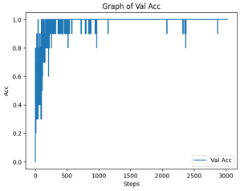
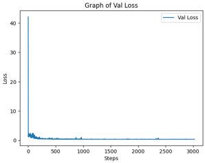
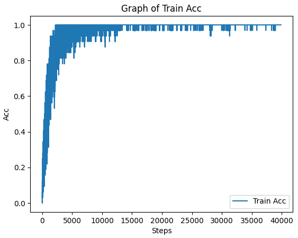
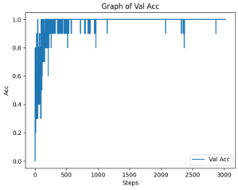

Club Computer Vision CSU (CCVC) hosted an AI competition during the month of October 2024 on the Kaggle Platform. The competitors are provided with a GoPro video of the perimeter of each CSU building and must train a machine learning model to classify a CSU building from a picture.

 




